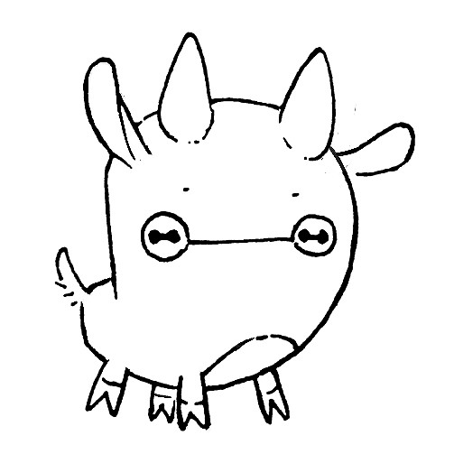

Uxn is a 8-bit virtual stack machine.
The goal of the project is to create a portable virtual machine capable of hosting various tools and games. Its design should have, at most, the complexity of the 6502, and its assembly language be both human-readable, and allow for the creation of mouse and keyboard driven applications. The distribution of Uxn projects should be akin to downloading a rom for a console emulator.
The thin layer that is the "Uxn emulator" should be the only part of this project needing to be ported to make the device available on any new platform. For that reason, Uxn has to be designed with a focus on portability such that it welcomes anyone to try their hand at building their own implementation. The current emulator is 400 lines of C89 over SDL2 as only dependecy.
While the aim is to distribute assembled binaries, to respect the philosophy of the tool's ecosystem, the assembly sources should be packaged alongside the rom. Similarly to the emulator, the assembler should be extremely simplistic in its implementation as to not discourage re-implementations. The C89 assembler is also 400 lines with no dependencies.
Memory
| Core | Program Counter | 1 short |
|---|---|---|
| Literal Counter | 1 byte | |
| Balance Counter | 1 byte | |
| Status Register | 1 byte | |
| Stacks | Working Stack | 256 bytes |
| Return Stack | 256 bytes | |
| Memory | RAM | 65536 bytes |
Status Register
The status register is distributed as follows, it shares the same byte as the register selector. The halt flag is used by the BRK instruction is stops the cpu, the short flag is used for 16-bits operations, the cond flag is set when an instruction requires a non-zero stack value to operate, and the sign flag is set when the operator should use signed integers.
T C S H | | | +---- Halt 0x01 | | +------ Short 0x02 | +-------- Sign 0x04 +---------- Cond 0x08
Special Addresses
Addresses at the end of the memory are used to keep various entry points into the program. The reset vector is run once, the frame vector is run each frame, and the error vector is run once when an error has occured.
| Colors | fff0 | Red |
|---|---|---|
fff1 | ||
fff2 | Green | |
fff3 | ||
fff4 | Blue | |
fff5 | ||
| Reserved | fff8 | --- |
fff9 | --- | |
| Vectors | fffa-fffb | Reset |
fffc-fffd | Frame | |
fffe-ffff | Error |
Return Stack
The CPU can tunnel through 128 subroutines and find its way back with the return stack, the opcode to jump into to a subroutine is JSR, the opcode to return from a subroutine is RTS. An item on the work stack can be temporarily sent to the return stack with WSR and returned with RSW. Uxn will automatically keep a count of the items that were moved from one stack to the other, the program will halt if trying to return or jump to a subroutine before all the items transferered have been returned.
Opcodes
There are 32 opcodes, each opcode occupies 5 bits of a byte, the remaining 3 are used to select the addressing mode of the values in the stack.
| mode | opcode | ||||||
| cond | sign | short | 0 | 0 | 0 | 0 | |
Opcodes pointing to addresses in memory pull 16-bits from the stack at a time, and are represented like [a b], where the a and b bytes are combined into a short. For example, [0xAB 0xCD] points to the memory address 0xABCD.
| I/O | Stack | ||||||
|---|---|---|---|---|---|---|---|
| 0x00 | BRK | 0x10 | POP | a | |||
| 0x01 | --- | 0x11 | DUP | a | a a | ||
| 0x02 | LIT | lc | 0x12 | SWP | a b | b a | |
| 0x03 | --- | 0x13 | OVR | a b c | a b a | ||
| 0x04 | --- | 0x14 | ROT | a b c | b c a | ||
| 0x05 | --- | 0x15 | --- | ||||
| 0x06 | LDR | [a b] | c | 0x16 | WSR | a | rs |
| 0x07 | STR | a [b c] | 0x17 | RSW | rs | a | |
| Logic | Arithmetic | ||||||
| 0x08 | JMP | [a b] | 0x18 | ADD | a b | c | |
| 0x09 | JSR | [a b] | rs | 0x19 | SUB | a b | c |
| 0x0a | --- | 0x1a | MUL | a b | c | ||
| 0x0b | RTS | rs | 0x1b | DIV | a b | c | |
| 0x0c | AND | a b | c | 0x1c | EQU | a b | c |
| 0x0d | ORA | a b | c | 0x1d | NEQ | a b | c |
| 0x0e | ROL | a b | c | 0x1e | LTH | a b | c |
| 0x0f | ROR | a b | c | 0x1f | GTH | a b | c |
lc stands for literal counter, rs for return stack, mp stands for memory pointer.
Uxmasm
Here is an example of the assembly language that prints hello world to stdout.
( hello world )
&Console { pad 8 stdio 1 }
|0100 @RESET
,text1 ,print-label JSR ( print to console )
BRK
@print-label ( text )
@cliloop
DUP2 LDR =dev/console.stdio ( write pointer value to console )
#0001 ADD2 ( increment string pointer )
DUP2 LDR #00 NEQ ,cliloop ROT JMP? POP2 ( while *ptr!=0 goto loop )
POP2
RTS
@text1 [ Hello World ] <1 .00 ( add text to memory, return 1 byte, add null byte )
|c000 @FRAME
|d000 @ERROR
|FF00 ;dev/console Console
|FFF0 [ f3f0 f30b f30a ] ( palette )
|FFFA .RESET .FRAME .ERROR
Literal mode
Each operation is 1 byte(8-bits). To differentiate operations from numbers, the LIT opcode toggles the literal mode for a length of 1 evaluation, the 16-bits mode LIT2 opcode toggles the literal mode for the length of 2 frames.
assembly | bytecode |
|---|---|
,12 | 0x02 0x12 |
.23 | 0x23 |
,abcd | 0x22 0xab 0xcd |
.abcd | 0xab 0xcd |
Short mode
Operations can be used on 16-bits at a time(2 bytes), by using the SHORT2 mode.
| Stack | Operation |
|---|---|
0x12 0x34 0x56 0x78 | SWP2 |
0x56 0x78 0x12 0x34 | ADD2 |
0x68 0xac |
Conditional mode
Every operation has the potential to conditionally operate by using the COND? mode, in the following branching example, the value 0xff will be added to the stack if the first value is greater than the second, otherwise 0xee will be added.
ROT is used to bring the result of GTH to the top of the stack, POP2 is used after the conditional JMP to remove the address of the label @there that is left on the stack.
#06 #05 GTH ,there ROT JMP? POP2 @here ( when lesser or equal ) #ee BRK @there ( when greater ) #ff BRK
Devices
There is a maximum of 8 devices accessible via the last page in memory, each device have 8 bytes to read from, and 8 bytes to write to. Devices are external systems to the Uxn code such as the screen, the mouse, the keyboard, etc.
| Device | I/O | ||
|---|---|---|---|
| Read | Write | ||
ff00 | console | nil | stdout |
ff10 | screen | WIDTH(high) | X(high) |
| WIDTH(low) | X(low) | ||
| HEIGHT(high) | Y(high) | ||
| HEIGHT(low) | Y(low) | ||
| color | |||
ff20 | sprite | WIDTH(high) | X(high) |
| WIDTH(low) | X(low) | ||
| HEIGHT(high) | Y(high) | ||
| HEIGHT(low) | Y(low) | ||
| address(high) | |||
| address(low) | |||
| color | |||
ff30 | controller | buttons byte | nil |
ff40 | keyboard | key byte | nil |
ff50 | mouse | X(high) | nil |
| X(low) | |||
| Y(high) | |||
| Y(low) | |||
| button byte | |||
| chord byte | |||
Screen
The screen supports 4 colors at once, the colors are defined in the special addresses fff0-fff5.
| Red | Green | Blue | |||||||||||||||||||||
|---|---|---|---|---|---|---|---|---|---|---|---|---|---|---|---|---|---|---|---|---|---|---|---|
| fff0 | fff1 | fff2 | fff3 | fff4 | fff5 | ||||||||||||||||||
| 0 | 1 | 2 | 3 | 0 | 1 | 2 | 3 | 0 | 1 | 2 | 3 | 0 | 1 | 2 | 3 | 0 | 1 | 2 | 3 | 0 | 1 | 2 | 3 |
Sprite Engine
Uxn's sprite device makes it easier to draw characters and icons to the screen by sending a memory address, a position and a color byte.
The sprite device's color byte defines the layer to draw on, the type of data to draw, and the colors to use.
| high nibble | low nibble(icn) | |||||||
|---|---|---|---|---|---|---|---|---|
| 0 | bg | icn | 0 | 0 | 8 | 0 | 2 | |
| 1 | fg | 1 | 1 | 0 | 9 | 1 | 2 | |
| 2 | bg | chr | 2 | 2 | 0 | a | 2 | |
| 3 | fg | 3 | 3 | 0 | b | 3 | 2 | |
| 4 | 4 | 0 | 1 | c | 0 | 3 | ||
| 5 | 5 | 1 | d | 1 | 3 | |||
| 6 | 6 | 2 | 1 | e | 2 | 3 | ||
| 7 | 7 | 3 | 1 | f | 3 | |||

incoming(4): tools gyo goki forth
Last update on 15E00, edited 13 times. +55/88fh -----|